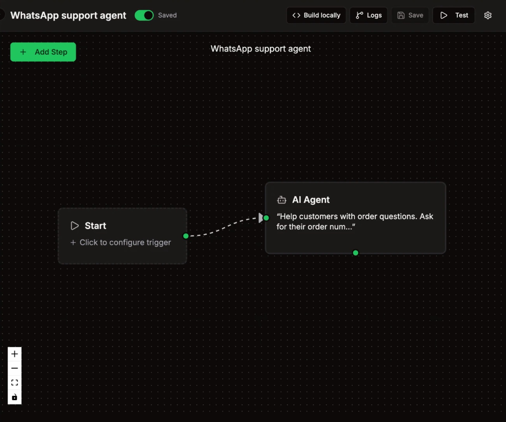
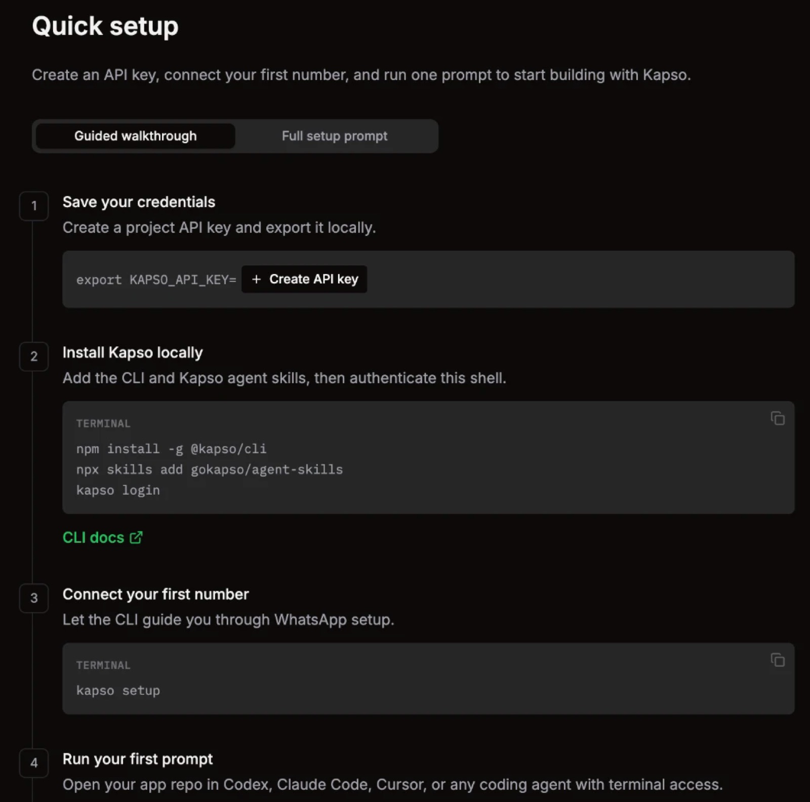
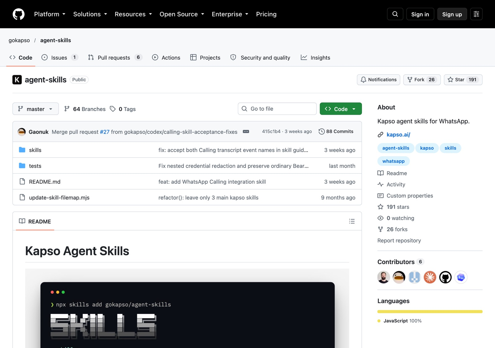
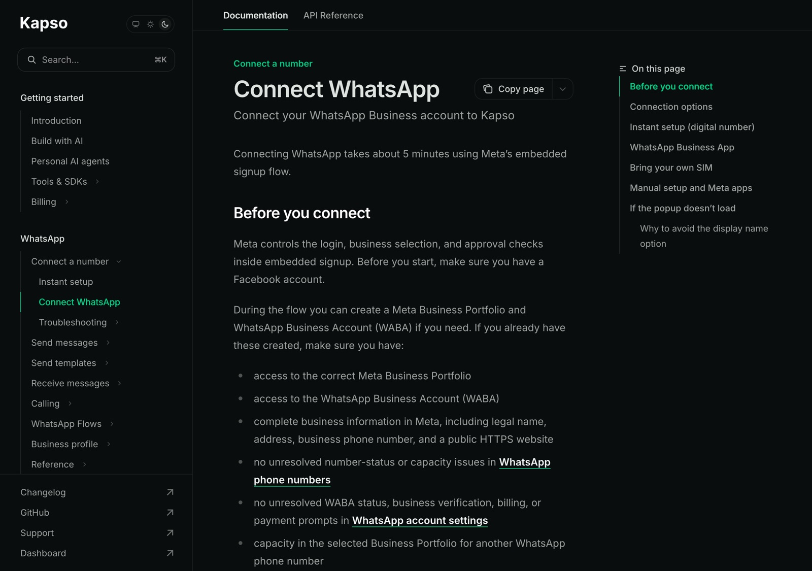
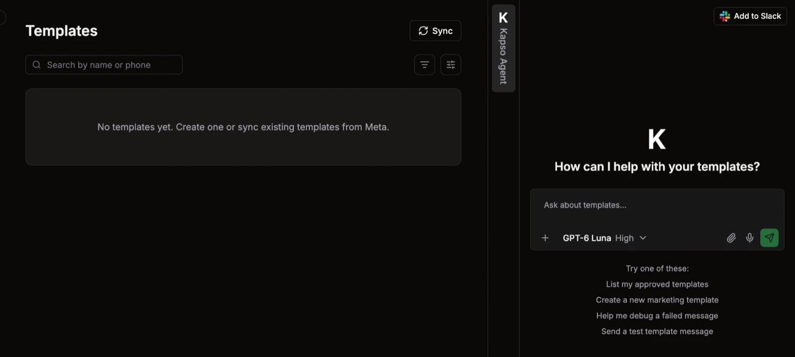
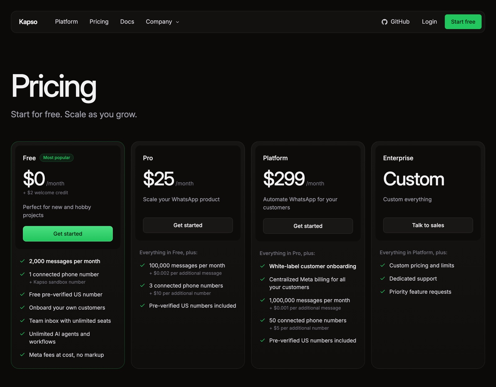

في الصفحة دي
Kapso منصة بتوصّلك بالـ API الرسمي بتاع واتساب، وعاملة skills لـ Claude Code. يعني بدل ما تبرمج الـ agent بإيدك، بتقول لـ Claude انت عايز إيه، وهو يبنيه على Kapso ويوصّله برقمك.
Kapso والـ agent skills بتوعها من عمل فريق Kapso (kapso.com)، والـ skills على github.com/gokapso/agent-skills. الصفحة دي شرح بالعربي من Grow With Khalaf بس، وإحنا مش تبع Kapso ولا Anthropic ولا Meta. كل لينك هنا بيوديك للمصدر الأصلي.
الـ agent ده بيشتغل إزاي
بيستخدم الـ skills والـ CLI بتوع Kapso عشان يعمل workflow فيه AI Agent، ويكتبله التعليمات.
الـ workflow شغال على سيرفرات Kapso ومتوصل برقمك، فبيرد حتى لو اللابتوب مقفول.
العميل بيكلّم رقم البيزنس العادي، والـ agent يرد من خلال الـ API الرسمي بتاع Meta.

قبل ما تبدأ
| محتاج إيه | ليه |
|---|---|
| Claude Code | هو اللي هيبني الـ agent. لو في تطبيق Claude على الكمبيوتر، افتح تبويب Code. |
| Node.js نسخة 20.19 أو أحدث | عشان الـ Kapso CLI وأمر تسطيب الـ skills. لو مش متسطّب، نزّله من nodejs.org أو اطلب من Claude يسطّبه. |
| حساب Facebook، ومعاه Meta Business Portfolio | Meta بتطلبهم وانت بتربط الرقم. لازم بيانات الشركة تبقى كاملة: الاسم القانوني، والعنوان، ورقم تليفون، وموقع HTTPS. لو مش موجودين، هتعملهم وانت بتربط. |
| رقم واتساب للبيزنس | ممكن رقم شغال على WhatsApp Business App، أو خط جديد. وتقدر تجرّب الأول على الـ Sandbox من غير رقم (الخطوة 3). |
| وسيلة دفع لرسوم Meta | من 1 أكتوبر 2026، Meta مش بتوصّل رسايل الـ service لأي حساب ملوش وسيلة دفع. ممكن تدفع بكريديت Kapso أو بكارت على حساب Meta. التفاصيل في الأسعار. |
1اعمل أكاونت وطلّع الـ API key
- ادخل على app.kapso.ai واعمل أكاونت ببلاش، وهو هيعملك project.
- هتلاقي صفحة Quick setup. في أول خطوة دوس Create API key وانسخ المفتاح.
- افتح الـ Terminal واكتب السطر ده، وحط مفتاحك مكان
your_api_key:
export KAPSO_API_KEY="your_api_key"

متحطوش في بوست ولا في screenshot، ومترفعوش على GitHub. أمر export بيفضل شغال في الـ Terminal المفتوح بس. لو عايزه يفضل على طول، قول لـ Claude يضيف KAPSO_API_KEY لملف ~/.zshrc.
2سطّب الـ CLI والـ skills
في نفس الـ Terminal، اكتب الـ 3 أوامر دول:
npm install -g @kapso/cli npx skills add gokapso/agent-skills kapso login
- الأول بيسطّب الـ Kapso CLI، وده اللي Claude بيستخدمه عشان يتعامل مع حسابك.
- التاني بيسطّب الـ skills. لو سألك تسطّبها لأنهي agent، اختار Claude Code.
- التالت بيفتح المتصفح عشان تسجّل دخول بحساب Kapso.
بعدها اكتب kapso status عشان تتأكد إن كل حاجة متوصلة. دي الـ 4 skills اللي اتسطّبت:
| الـ skill | بتعمل إيه |
|---|---|
| automate-whatsapp | بتبني الـ workflows والـ agents والـ functions. دي اللي هتشتغل بيها النهارده. |
| integrate-whatsapp | بتربط واتساب، وتعمل الـ webhooks، وتبعت رسايل عادية أو templates. |
| observe-whatsapp | بتدوّر في اللوجز، وتعرف الرسالة موصلتش ليه، وتعمل health check. |
| integrate-whatsapp-calling | لمكالمات واتساب الصوتية. مش هتحتاجها في الدليل ده. |

3اربط رقم البيزنس
kapso setup
الأمر ده بيطلّعلك لينك. افتحه، وكمّل خطوات Meta (اسمها embedded signup، وبتاخد حوالي 5 دقايق). هتختار طريقة من التلاتة دول:
| الطريقة | تنفع إمتى |
|---|---|
| WhatsApp Business App | لو رقمك شغال على تطبيق واتساب بيزنس ومش عايز تسيبه. بتمسح QR code من التطبيق، والرقم يفضل شغال في التطبيق ومع Kapso في نفس الوقت. |
| Bring your own SIM | لو عندك خط مخصوص للبيزنس. بتأكده بـ SMS أو مكالمة، والرقم بيتنقل لـ Kapso خالص ومش هيشتغل على التطبيق تاني. |
| Instant setup | رقم أمريكي جاهز من Kapso من غير SMS. سريع للتجربة، بس العميل المصري هيشوف رقم +1. |
لو ظهرلك Use a display name with a virtual number instead متختاروش. Kapso بيقولوا إنه ممكن يسيبك برقم محدود تبع Meta.
من WhatsApp ← Sandbox في Kapso دوس Add Test Number، واكتب رقم موبايلك. بعدين دوس Open WhatsApp وابعت الكود اللي من 6 حروف من نفس الرقم في خلال 15 دقيقة، والكود بيفرّق بين الحروف الكبيرة والصغيرة. الـ Sandbox بيقبل رسايل نص وأزرار بس، ومفيهوش templates.

4قول لـ Claude انت عايز إيه
افتح Claude Code في فولدر جديد فاضي. انسخ البرومبت ده، واملا الحاجات اللي بين القوسين بالبرتقالي:
عايزك تبنيلي agent على واتساب باستخدام Kapso. عن الشركة: [اسم الشركة]، شركة SaaS بتعمل [مثلًا: سيستم إدارة مخازن للشركات]. الباقات: [الباقات وأسعارها]. الـ agent يعمل الآتي: 1. يرد على أي lead يبعت على رقمنا [+20 10 0000 0000]. يتكلم مصري، ولو العميل كتب إنجليزي يرد عليه إنجليزي. 2. يسأل أسئلة قليلة، واحد واحد: اسم الشركة، والمجال، وعدد اليوزرز المتوقع، وعايزين يبدأوا إمتى. 3. لو الـ lead مناسب، يبعتله لينك حجز الديمو مع السيلز مانجر: [لينك Calendly أو Cal.com]. 4. لو العميل طلب يكلّم حد من التيم، أو سأل حاجة مش عارف إجابتها، يحوّله لحد من التيم على طول ومايألّفش إجابة. 5. ميوعدش بخصومات ولا مواعيد تسليم. استخدم الـ Kapso skills والـ CLI. اعمل workflow فيه AI Agent متوصل بالرقم اللي ربطته، وخليه draft. وريني التعليمات (system prompt) قبل ما تشغّله.
Claude هيشوف الأرقام المتوصلة بحسابك، ويبني الـ workflow، ويوريك التعليمات. راجعها، ولما تبقى تمام قوله «شغّله».
اللينك أسهل وأضمن حاجة تبدأ بيها. لو عايز الـ agent يشوف المواعيد الفاضية ويحجز بنفسه، قول لـ Claude: «اربط الـ agent بـ Cal.com كـ webhook tool». بس ده هيحتاج API key بتاع الكالندر.
5جرّبه
- ابعت رسالة للرقم من موبايلك الشخصي (أو للـ Sandbox) كأنك lead: «أهلًا، عايز أعرف أسعار السيستم».
- رد على أسئلته، وجرّب تقوله «عايز أكلّم حد من التيم» عشان تتأكد إنه بيحوّل.
- لو حاجة مش ماشية صح، ارجع لـ Claude Code والصق ده:
شوف آخر المحادثات واللوجز بتاعة الـ agent على Kapso، وقولّي رد إزاي في كل رسالة. لو فيه رد غلط أو error، قولّي السبب وصلّحه، ووريني التعديل قبل ما تنشره.
قواعد Meta اللي لازم تعرفها
| القاعدة | يعني إيه |
|---|---|
| الموافقة (opt-in) | متبعتش لحد على واتساب غير لو هو موافق إنك تكلمه هناك. لو العميل هو اللي بدأ وبعتلك، يبقى تمام. |
| شباك الـ 24 ساعة | أول ما العميل يبعتلك، بيبدأ عدّاد 24 ساعة، وبيتصفّر مع كل رسالة جديدة منه. في الوقت ده الـ agent يرد عادي. |
| بعد الـ 24 ساعة | مش هتقدر تبعتله غير template متوافق عليها من Meta. المراجعة بتاخد لحد 24 ساعة، وممكن أكتر في أول مرة. |
| تحويل لبني آدم | Meta بتسمح بالـ automation، بس لازم يبقى فيه طريقة واضحة وسريعة العميل يوصل بيها لحد من التيم. عشان كده البند 4 في البرومبت مهم. |

فيه 3 أنواع: Marketing للعروض والترويج، بعدها Utility لحاجة تخص طلب أو ميعاد، وفي الآخر Authentication لأكواد التأكيد. Kapso بيقولوا إن اختيار النوع الغلط من أكتر أسباب الرفض.
الأسعار
فيه حاجتين منفصلين: باقة Kapso، ورسوم Meta على الرسايل.
| باقة Kapso | السعر | رسايل في الشهر | أرقام |
|---|---|---|---|
| Free | $0، ومعاها $2 كريديت هدية | 2,000 | رقم واحد |
| Pro | $25 في الشهر | 100,000 | 3 أرقام |
| Platform | $299 في الشهر | 1,000,000 | 50 رقم |
الرسايل اللي بتتحسب في Kapso هي اللي داخلة واللي خارجة، نص أو ميديا أو templates أو reactions. علامات القراءة مش بتتحسب. الـ AI agents والـ workflows ببلاش في كل الباقات.
من 1 أكتوبر 2026، كل رقم ليه 1,000 رسالة service ببلاش في الشهر من Meta. رسايل الـ service هي اللي بترد بيها جوه الـ 24 ساعة، والـ 1,000 مش بتترحّل للشهر اللي بعده. بعدها كل رسالة بفلوس حسب بلد العميل. الـ templates دايمًا بفلوس. Kapso بيعدّوا رسوم Meta زي ما هي من غير زيادة، وفيه 5% فرق عملة لو الحساب مش بالدولار.

أسئلة ومشاكل
| السؤال أو المشكلة | الإجابة |
|---|---|
| ينفع برقم مصري +20؟ | Kapso مش ناشرين ليستة بالبلاد المدعومة، وبيقولوا إن قيود البلد أو الحساب ممكن توقف الإرسال. إحنا لسه مجربناش رقم مصري. جرّب الأول على الـ Sandbox، ولو حصلت مشكلة كلّم الدعم من Help ← Support في Kapso. |
| هيرد لو اللابتوب مقفول؟ | أيوه. الـ workflow شغال على Kapso. Claude Code بتحتاجه بس وانت بتبني أو بتعدّل. |
| اللي بيرد على العميل هو Claude؟ | Claude Code هو اللي بيبني الـ agent ويكتب تعليماته. الرد نفسه بيطلع من الموديل اللي متحدد في خطوة الـ AI Agent جوه Kapso. لو عايز تعرف الموديلات المتاحة أو تغيّره، اسأل Claude. |
kapso: command not found | اتأكد إن Node.js نسخة 20.19 أو أحدث، وسطّب تاني بـ npm install -g @kapso/cli. أو استخدم الـ installer الرسمي: curl -fsSL https://kapso.ai/install.sh | bash. |
| Claude مش شايف الـ skills | اقفل Claude Code وافتحه تاني. ولو لسه، شغّل npx skills add gokapso/agent-skills تاني واختار Claude Code. |
| Active sandbox session required | الرقم اللي بتبعتله مش هو الرقم اللي سجّلته في الـ Sandbox. |
| كود الـ Sandbox مش شغال | الكود بيخلص بعد 15 دقيقة وحساس للحروف. اعمل session جديدة وابعته من نفس الرقم. |
| الرسايل مش بتوصل للعميل | اتأكد إن فيه وسيلة دفع أو كريديت على الحساب، وإنك جوه الـ 24 ساعة. وقول لـ Claude: «استخدم observe-whatsapp وقولّي الرسالة موصلتش ليه». |
Kapso والـ agent skills من عمل فريق Kapso. الـ skills على github.com/gokapso/agent-skills من غير رخصة مكتوبة، فإحنا مش بنعيد نشر ملفاتها، وبنحطلك لينك المصدر بس. المعلومات من docs.kapso.ai، ومن docs بتاعة Meta، واتراجعت في 28 أكتوبر 2026. الشرح والأمثلة من Grow With Khalaf، وإحنا مش تبع Kapso ولا Anthropic ولا Meta.